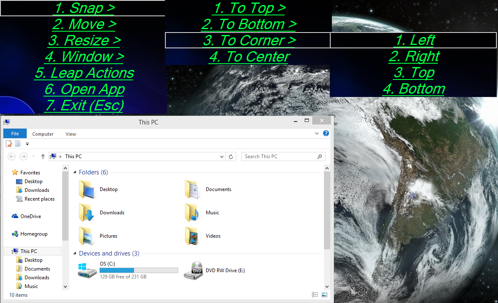
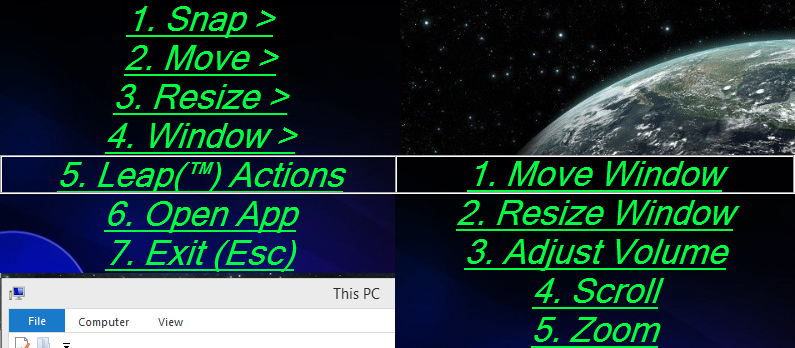
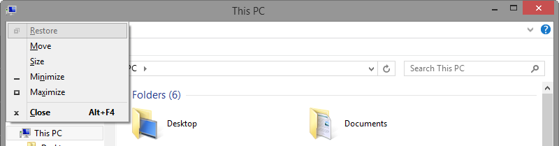

This menu provides a host of handy shortcuts, alleviating the need to memorize a plethora hotkeys and gestures.
One particularly useful item is Leap Actions. One may tire quickly from the repition of simply beginning interactive Leap actions using the mapped chain of gestures.. It requires memorization of multiple gesture chains and then flawless execution. Once that has been achieved, however, the real work of the hand has just begun. As a quick, anti-fatigue alternative, use the menu instead.
Activate the menu by hotkey or gesture (Default hotkey is Win + A. Default gesture is Swipe Left, Swipe Right). Think of this menu like extended options for the standard windows menus.
This menu is quite navigable -- you can navigate using no hands via the Leap Motion Controller! Here's an exhaustive list of the ways to navigate:
| Hotkey | Action |
|---|---|
| Up Arrow | Moves selection up |
| Down Arrow | Moves selection down |
| Left Arrow | Exits out of current menu. |
| Escape | Exits out of current menu. |
| Right Arrow | Submits current selecton. |
| Enter | Submits current selection. |
| Numpad Enter | Submits current selection. |
| Hotkey | Action |
|---|---|
| Wheel Up | Moves selection up |
| Wheel Down | Moves selection down |
| Left Click | Submits current selecton. |
| Middle Wheel | Submits current selecton. |